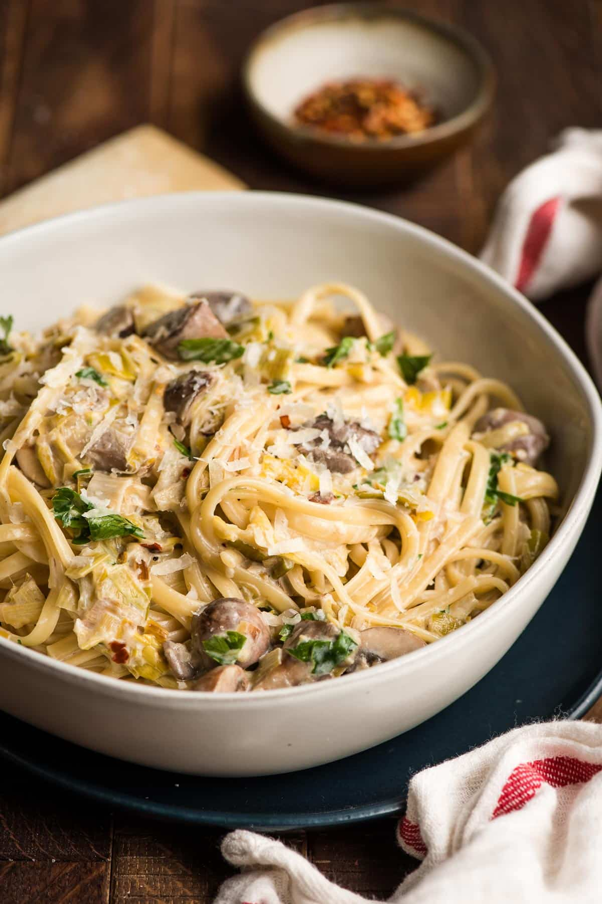

To go back to the Homepage click here: Homepage
Creamy Mushroom & Leek Pasta

Description
This is a delicious hearty creamy pasta dish with mushrooms and leeks. It can be made in a single pot and within 30 minutes! For some extra protein chicken can be added. To really elevate the dish,
adding tarragon at the end will lift the flavour!
Ingredients: (serves two)
- 2 tbsp olive oil
- 200g rigatoni pasta
- 250g mushrooms (I like to use chestnut mushrooms)
- 1/2 leek
- 2 garlic cloves
- 200ml single cream
- 1 chicken stock cube
- tarragon (handful)
Steps:
- Dice the mushrooms, leek and garlic cloves.
- Fry the garlic in olive oil until fragrant.
- Add the mushrooms and leek
- Once all the vegetables are cooked, add the chicken stock and single cream.
- Add the pasta.
- Simmer on low heat for 20 minutes.
- Season to taste and add tarragon.
- Serve & enjoy!